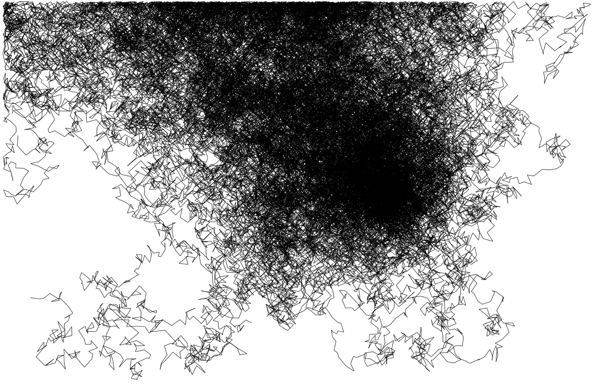

binarymax();
[tRand]
Dilated Age of Information
jsCube
reality remix
square chase
raytrace
Since twitter changed their API requirements, this no longer works as a pure client-side app.
Here is a screenshot of how is used to look:
